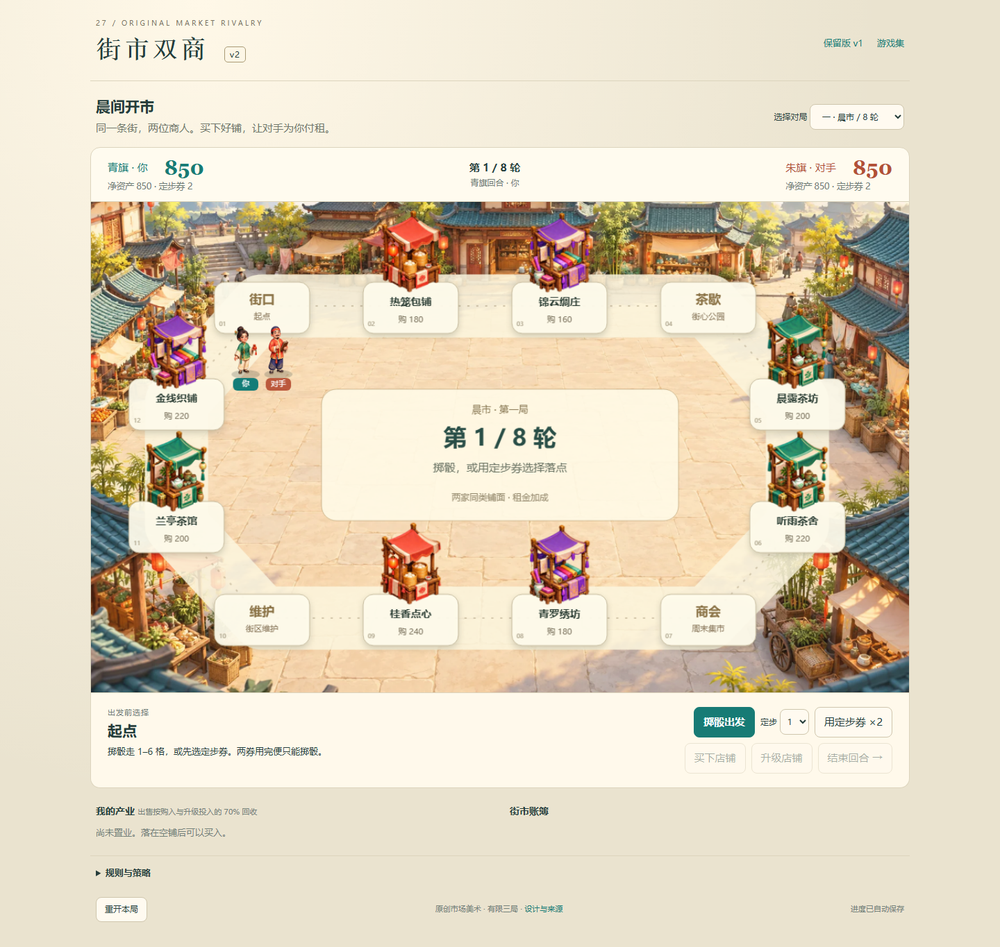
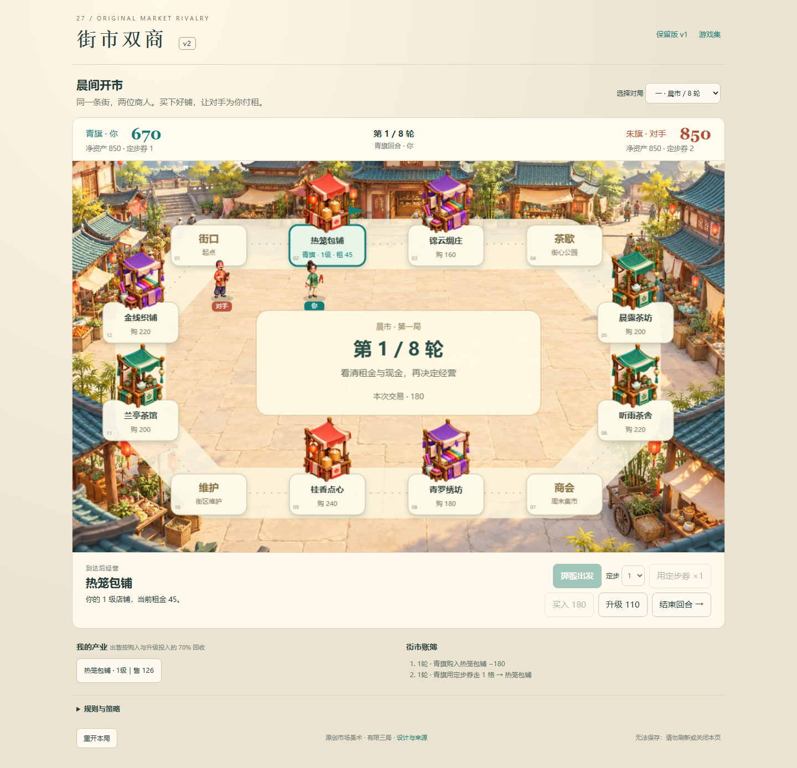
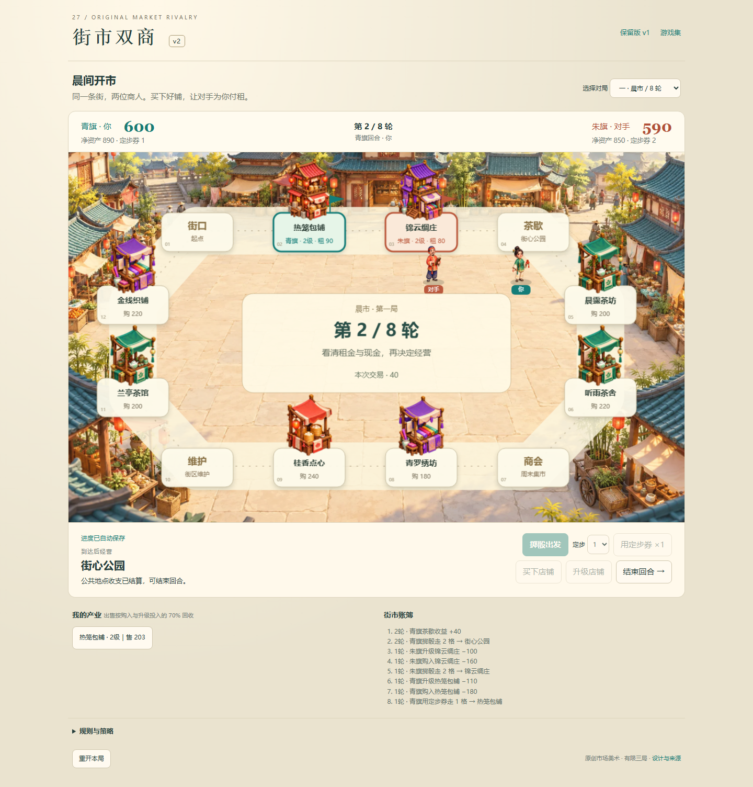

商旅 v2 · 存档保护与准确状态
2026-10-20。本页区分修前公开故障复现、修后本地普通操作及故障 fixture。未改规则、AI、素材、原存档格式和其它作品。
打开游戏 · 完整验证说明与剩余四个候选 · 此前三局实玩记录
- 修前：坏档启动被覆盖；写入已恢复却仍显示失败。
- 修后：坏档停止覆盖、仍可临时玩；拒绝写入保留旧有效档，后续成功写入恢复准确提示。
- 10 组存储/真实控制器测试。本地正常 UI 购买升级、刷新、掷骰刷新通过。
- 另行注入坏 JSON、未知版本、损坏结构、配额/权限异常和读取拒绝，未把故障 fixture 当自然玩法。
修前公开记录 · 修后本地记录 · 最多五项筛查 · 复验脚本
修前公开：坏记录被新局覆盖，显示已保存
修前公开：实际写入恢复成功，提示仍失败
修后本地普通 UI：购铺升级，现金 560修后本地普通 UI：第二轮掷骰刷新
修后本地故障 fixture：原坏档保全，临时切局修后本地故障 fixture：390 窄屏写失败警告修后本地故障 fixture：恢复写入后显示已保存原生整页截图，未裁切。窄视口不是手机真机或所有内容同屏验收。本轮未重跑三局通关、自然破产、真机触摸、声音和审美；上线 SHA 与线上复核在交付记录中另行确认。